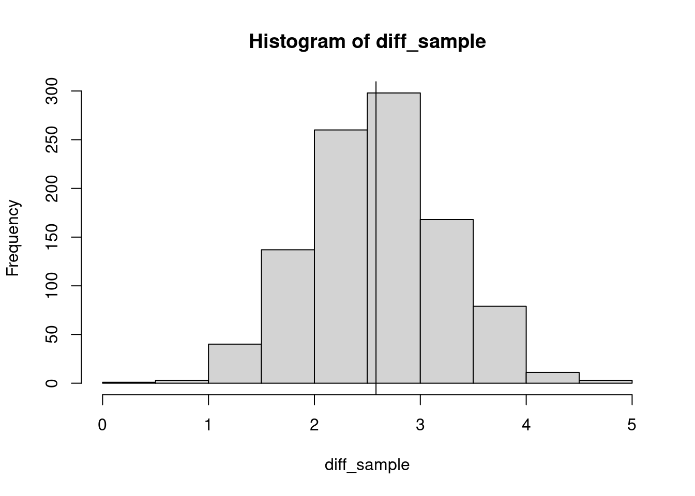

bears <- read.csv("data/bears.csv")
num_bears <- bears$Num.Bears16 Monte Carlo methods
The Monte Carlo casino refused to admit me until I was properly dressed so I went and found my stockings, and then came back and lost my shirt.
— Dorothy Parker
16.1 Idea
In statistics, Monte Carlo methods are computational methods in which repeated, random sampling is used for estimation or hypothesis testing.
They are often used when:
- We have small data sizes, and thus (asymptotic) convergence to known distribution is not known.
- We want to apply a permutation test, but there are too many permutations.
- Build posterior distributions from Bayesian calculations.
- Determine confidence intervals for parameters that are difficult to calculate.
- Test hypotheses on data that are not distributed according to convenient, well-studied distributions.
- etc.
16.2 History
Though examples of what we would call today Monte Carlo methods can be dated back centuries, the idea was formalized by scientists working on the Manhattan Project, and especially Stanislaw Ulam (the inventor of MCMC; the program stan is named after him), Johnny Von Neumann and Nicholas Metropolis (who came up with the name Monte Carlo, a reference to the famous casino).
These methods have found applications in all the sciences, and beyond.
16.3 Bootstrapping
The idea is to build confidence intervals for (complex) metrics by repeatedly re-sampling the data (with replacement), thereby mimicking the sampling process. This method was pioneered by Bradley Efron (“Bootstrap Methods: Another Look at the Jackknife” Ann. Statist. 1979).
The basic algorithm is as follows:
- We have a data set of size \(n\), and we want to compute a certain metric on the data.
- We iteratively re-sample the data (with repetition), each time obtaining a sample of size \(n\)
- We compute the metric for the re-sampled data sets, thus building a distribution for the metric.
- We can compute statistics on the distribution (e.g., percentiles, confidence intervals, etc.)
16.3.1 Example 1
We are going to use data on number of bears found per quadrat, found in a small island in Foxe Basin, Canada, which is occupied by a high density of bears during the summer ice-free season. The data, collected using satellite imagery, is taken from Stapleton S. et al. (“Polar Bears from Space: Assessing Satellite Imagery as a Tool to Track Arctic Wildlife” PLoS ONE 2014), and the analysis follows the presentation in Fieberg, J.D. et al. (“Resampling-based methods for biologists” PeerJ 2020).
Let’s load the data:
and compute the mean number of bears per quadrat
mean(num_bears)[1] 0.5609756and count the number of quadrats
length(num_bears)[1] 164What should we expect for the mean if we had access to only 75 quadrats? We can bootstrap the data? we can approach this by repeatedly sampling 75 quadrats out of the 164 and measure the distribution of the means:
sample_means <- replicate(1000, mean(sample(num_bears, 75)))
# this is the average of the sampled means
mean(sample_means)[1] 0.5612# typically, confidence intervals are taken to be +/- 2 * sd/sqrt(n)
confidence <- mean(sample_means) + c(-2, 2) * sd(sample_means)/sqrt(75)
confidence[1] 0.5424307 0.579969316.4 Example 2
Another example, taken from Fieberg et al.
[Consider the] data collected by the Minnesota Department of Natural Resources to explore the potential impact of changing fishing regulations on the size distribution of northern pike (Esox lucius) in Medicine Lake, an approximately 460-acre lake in Beltrami County, MN. In 1989, the MN DNR instituted a slot limit of 22–30 inches in this lake (i.e., all caught fish within this size interval had to be released). We consider length data from 73 and 81 fish collected in trap nets in 1988 and 1993, respectively (before and after the fishing regulation was put in place). Importantly, these data come from only one lake, and many other factors may have changed between 1988 and 1993. Therefore, we must be cautious when interpreting any changes in the distribution of fish sizes (i.e., attributing the cause of length changes to the management regulation or generalizing results to other lakes). Nonetheless, we can ask, “How much did fish length, on average, change between 1988 and 1993 in Medicine Lake?” To address this question, we estimate the difference in the mean length of fish in the two samples. We also quantify our uncertainty in this estimated difference in means, recognizing that we would get a different estimate if we could go back and collect other samples of fish in those 2 years.
Let’s read the data
dt <- read.csv("data/Pikedata.csv")And divide it by year
y1988 <- dt$length.inches[dt$year == 1988]
y1993 <- dt$length.inches[dt$year == 1993]
print(mean(y1993) - mean(y1988))[1] 2.581708Showing that fish in 1993 were 2.6 inches longer. Because we caught a small number of fish (about 80) per year, we can build a distribution for the difference by bootstrapping
sample_mean <- function(x){
mean(sample(x, length(x), replace = TRUE))
}
diff_sample <- replicate(1000, sample_mean(y1993) - sample_mean(y1988))
hist(diff_sample)
abline(v = mean(y1993) - mean(y1988))
16.5 Hypothesis testing using Monte Carlo
These methods are often used when we can easily sample from the null model (i.e., a model encoding the null hypothesis), and we want to compute some statistics on the observed data v. the randomized data. We can associate an “empirical” p-value to the test, by measuring how often the statistics on the randomized data exceeds that measured for the empirical data.
16.5.1 Example: penguin breeding pairs
This example is taken from Graeme Ruxton & Markus Neuhäuser (“Improving the reporting of P-values generated by randomization methods”, Methods in Eco & Evol 2013).
Massaro & Blair (New Zealand J. Ecol, 2003) wanted to compare the numbers of breeding yellow-eyed penguins (Megadyptes antipodes) on Stewart Island off New Zealand with those on nearby islands, which (unlike Stewart Island) had no feral cats (Felis catus) that are potential predators of the penguins. They visited 19 breeding colonies on Stewart island and recorded the following numbers of breeding pairs at them {7,3,3,7,3,7,3,10,1,7,4,1,3,2,1,2,9,4,2}, and 10 colonies on nearby islands where the recorded numbers of pairs were {15,32,1,13,14,11,1,3,2,7}. Thus, in total, 178 breeding pairs were observed; on Stewart Island, the mean colony size (±SE) was 4.2 (±0.6), whereas on other islands, it was 9.9 (±3). We want to explore by randomization whether this sample gives reason for rejecting the null hypothesis that each pair chooses a breeding site (independently) without regard to the presence of cats. […] Given the noticeably lower variability among colony sizes on Stewart Island, an appropriate test statistic to adopt might be the t statistic for samples with unequal variance (Ruxton 2006). For each randomization, each of the 178 pairs independently chooses one of the 29 colonies (each with equal probability).
In a nutshell, the idea is to
- measure the t statistics for the observed data
- repeatedly generate randomized data by assigning the 178 pairs to the colonies at random
- measure the t statistics for the randomized data, forming a distribution
- compute the (empirical) probability of finding a value for the randomized data that is larger than that found for the observed data
set.seed(1)
original <- c(c(7,3,3,7,3,7,3,10,1,7,4,1,3,2,1,2,9,4,2), # Stewart Island
c(15,32,1,13,14,11,1,3,2,7) # other island
)
# compute t-stat for original data [first 19 are one island, the rest are the other island]
tobs <- abs(t.test(original[1:19], original[-(1:19)])$statistic)
# now randomized the data and record the number of times we've found a value larger than the
# one observed for the empirical data
num_rand <- 999
p_value <- 0
for (i in 1:num_rand){
randomized <- table(sample(1:29, 178, replace = TRUE))
trnd <- abs(t.test(randomized[1:19], randomized[-(1:19)])$statistic)
if (trnd >= tobs) p_value <- p_value + 1
}
print(p_value)[1] 61In this case, we have observed a larger (or equal) value 61 times out of 999 randomizations. The last step is to divide this number by the number of simulations, to obtain a probability. There are two ways to do this:
\[ p = \frac{\sum_i{I(x_i \geq X})}{n} \]
where \(x_i\) is the statistics for randomization \(i\), \(X\) is the statistics for the observed data, and \(n\) is the number of randomizations. In this case:
p_value / 999[1] 0.06106106Alternatively, and slightly more conservatively, we can assume that the empirical data was also sampled from the null model, in which case:
\[ p = \frac{1+ \sum_i{I(x_i \geq X})}{n + 1} \]
yielding:
(1 + p_value) / 1000[1] 0.062The difference between the two approaches is largest when the probability of observing a large value in the randomizations is very small (in one case we would get \(0\), in the other \(1/(n+1)\)). Ruxton & Neuhäuser recommend stating the choice explicitly, to improve replicability. A discussion of this issue in the field of genetics can be found in North et al. (“A Note on the Calculation of Empirical P Values from Monte Carlo Procedures”, Am J Hum Genet 2002); Gandy (“Sequential implementation of Monte Carlo Tests with uniformly bounded resampling risk” Journal of the American Statistical Association 2000) provides an algorithm to compute confidence intervals on the empirical p-value.
Naturally, the larger the number of simulations, the more accurate the result. The rule of thumb is that one would need about \(10^4\) randomizations to be confident in the first two decimals.
16.6 Randomizing binary tables (bipartite networks)
Often, biological data is represented by binary, rectangular tables. For example:
- Rows are sampling sites, and columns are species; a 1 marks the presence of a species at a site, and a 0 its absence.
- Rows are individuals and columns are SNPs.
- Rows are species and columns are traits.
- Rows are genes and columns are times; a 1 marks genes that are significantly over-expressed at a given time.
- …
These data can be represented as either a binary, rectangular matrix, or equivalently as a bipartite network.
One of the most salient feature of such a table is given by its marginal totals (row/col sums, or the degree of the nodes in the bipartite network). The marginal totals/degrees greatly influence the network/table structure. For example, in extreme cases there is only one binary table/network with a given set of degrees.
A <- matrix(c(
1,1,1,1,
1,1,1,0,
1,1,1,0,
1,1,0,0,
1,0,0,0
), 5, 4, byrow = TRUE)
B <- matrix(c(
1,1,1,1,
1,1,1,0,
1,1,0,1,
1,1,0,0,
1,0,0,0
), 5, 4, byrow = TRUE)
A [,1] [,2] [,3] [,4]
[1,] 1 1 1 1
[2,] 1 1 1 0
[3,] 1 1 1 0
[4,] 1 1 0 0
[5,] 1 0 0 0B [,1] [,2] [,3] [,4]
[1,] 1 1 1 1
[2,] 1 1 1 0
[3,] 1 1 0 1
[4,] 1 1 0 0
[5,] 1 0 0 016.6.1 Randomizing the network: checkerboard swapping
If we can identify two rows and two columns such that the induced submatrix is
| a | b | |
|---|---|---|
| A | 0 | 1 |
| B | 1 | 0 |
or
| a | b | |
|---|---|---|
| A | 1 | 0 |
| B | 0 | 1 |
we can swap the submatrix for the other, without altering the row/col marginal totals.
16.6.2 Randomizing the network: curveball
The same idea can be generalized. One fun way to think about this, introduced by Strona et al. (“A fast and unbiased procedure to randomize ecological binary matrices with fixed row and column totals” Nature Comm 2014) is to consider children exchanging baseball cards. In the example above, the cards are the columns and the children are the rows, and two children exchange one card (for example, A does not have card b, and B does not have card a; if they exchange them the number of cards per child and the number of children per card are unchanged).
Take two rows of a binary matrix:
| a | b | c | d | e | f | g | |
|---|---|---|---|---|---|---|---|
| A | 0 | 1 | 0 | 1 | 1 | 1 | 0 |
| B | 1 | 1 | 1 | 0 | 1 | 0 | 1 |
The intersection set \(A \cap B\) is given by {a,c,d,f,g}, with A contributing two “cards” (d, f) and B contributing three (a,c,g). If we pool all the cards in the intersection, and then A picks two at random, and B the remaining three, the marginals are unchanged.
Clearly, the “mixing” of the table is faster, because we can trade several cards at once. It can be proven that, after a sufficiently large number of trades, the resulting table/network is sampled uniformly from the set of tables/networks with the given marginal totals.
For example, create a random binary table, and shuffle it keeping the marginal totals:
set.seed(1)
source("data/curveball.R")
# create a random table
A <- matrix((runif(10 * 7) < 0.5) * 1, 10, 7)
# this are the the marginal totals
rowSums(A) [1] 4 4 3 5 3 4 4 3 2 4colSums(A)[1] 4 5 7 5 2 7 6# randomize the matrix
B <- curveball.run(A, 1000)16.6.3 Example: Darwin’s finches
Jared Diamond proposed that the presence/absence of species on islands would be influenced by competition: bird species would try avoiding overlapping with their competitors, and would tend to co-occur with species they are not competing with. While this idea generated a very contentious debate, here we are going to test this hypothesis using the famous Darwin’s finches (see Weiner, The Beak of the Finch: A Story of Evolution in Our Time 1994), using a metric proposed by Roberts and Stone. Take \(A\) to be a matrix with the \(m\) finch species as rows, and \(n\) islands as columns; a 1 marks the presence of a finch species on an island. The matrix \(S = A A^T\) counts the number of islands in which species co-occur. Naturally, the diagonal reports the number of islands in which a finch species is found.
Roberts and Stone proposed to measure:
\[ \bar{S^2} = \frac{1}{m (m-1)} \sum_{i\neq j}S_{ij}^2 \]
This number is small if finch species do not co-occurr often, and is high when some species always co-occur. We are going to use the curveball algorithm to randomize the species data, and then compute an empirical p value for the probability of observing this result by chance:
finches <- as.matrix(read.csv("data/finches.csv"))
# compute mean squared overlap, excluding self
# index proposed by Roberts and Stone, Oecologia 1990
mean_sq_ol <- function(M){
M2 <- (M) %*% t(M) # number of co-occurrences
diag(M2) <- NA # no self
return(mean(M2^2, na.rm = TRUE))
}
# observed value
obs <- mean_sq_ol(finches)
# randomizations
nrand <- 249
pval <- 0
for (i in 1:nrand){
tmp <- mean_sq_ol(curveball.run(finches, 250))
if (tmp >= obs) { # testing "partitioning/competition"
pval <- pval + 1
}
}
print((pval + 1) / (nrand + 1))[1] 0.004we conclude that our null model (finches choose random islands, considering that some fiches are more widespread than others, and that some islands harbor a larger number of species) would not generate such a high value by chance with high probability, and thus we reject the hypothesis.